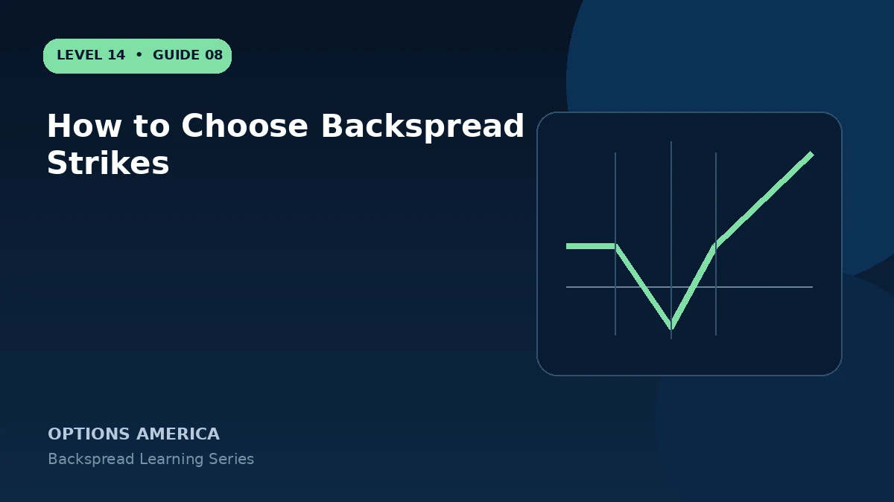

Choose short and long backspread strikes using the catalyst target, expected move, option skew, credit and maximum-loss zone.
Place the short strike
The short strike can be ATM or ITM to raise financing, but this also increases assignment and directional exposure. Relate it to where the forecast begins, not premium alone.
Place the long strike
The long strike should be reachable under the large-move thesis. Moving it farther away reduces option cost but widens the maximum-loss interval and pushes the profitable tail farther out.
Use skew
Call and put skew can make the long options relatively cheap or expensive. Compare volatility at both strikes rather than treating one underlying as having a single IV.
Test executable prices
Model the spread using realistic fills for all three contracts. A visually favorable theoretical credit can disappear after bid-ask width and commissions.
A practical example
Compare 100/105 and 100/110 call backspreads. The wider version may be cheaper but carries a larger maximum loss at the long strike and needs a much stronger rally.
This simplified example focuses on selected expiration outcomes; live prices and risks will differ. Live option prices also reflect the underlying price, time decay, rates, dividends, liquidity and transaction costs. Greeks are theoretical estimates, not guarantees.
Turn the payoff into a trading plan
Before entering how to choose backspread strikes, write down the stock price, both strikes, expiration, contract ratio and total opening credit or debit. Then calculate the quiet-side result, maximum loss at the long-option strike and the far-move breakeven. These three checkpoints make the position easier to monitor and help prevent the attractive tail payoff from hiding the loss valley.
Test at least five scenarios: no move, a move to the short strike, a move to the long strike, a move to breakeven and a move well beyond breakeven. Repeat the exercise with implied volatility higher and lower and with less time remaining. The resulting range is more useful than a single payoff line because a live backspread can change substantially before expiration.
Finally, define the catalyst, maximum acceptable loss, review date and closing method in advance. Use one multi-leg order whenever possible, confirm every fill and recalculate the remaining position before changing any leg. Assignment, liquidity and transaction costs belong in the plan even when the expiration loss appears defined.
Frequently asked questions
Should the short option be ATM?
It is common, not mandatory.
Do wider strikes reduce risk?
They often increase the middle loss width.
Why examine skew?
The two strikes can have materially different implied volatility.
Continue the Backspread Strategies cluster
Explore related guides: Backspread Expiration and DTE Selection · Implied Volatility and Vega in Backspreads · Call Ratio Backspread Explained. For a structured sequence, use the free Level 14 – Backspread course.
Options involve risk and are not suitable for every investor. This material is educational and is not investment, tax or legal advice. Greeks are theoretical estimates, and contract terms and broker requirements can vary.